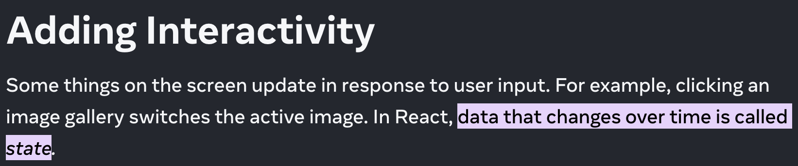

working title

State is controlled by the component itself
Props are passed in from a parent component
State is mutable, props are immutable
You can also pass functions down as props
this.state and this.setState
Single source of truth
Immutability
Predictable state changes through reducers
Form state? Put it in the Redux store
API data? Put it in the Redux store
Some async action? Use a thunk or saga
State that is only relevant to a single component
(this can also be shared within a tree of components)
State that is shared across the entire app
Data that we fetch from a server
Where we store everything related to a single form
Input values
Validation functions
Form errors
State that you want to persist as part of the URL
Applied filters
Current page
Sorting
Regular or slim fit, black color, page 2
useState
useReducer
useContext
useState
tricks + gotchas
Functional updater
Putting props in state
The initial value is always discarded on re-renders
Lazy initializer
useReducer
useState
useContext
The closest thing to global state in React
tricks + gotchas
Making Context fail loudly
If context updates, all of the children that use it will re-render
Like Redux but no providers